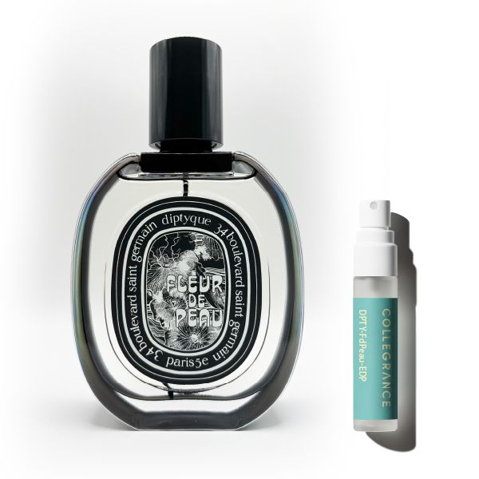

「どこの香水？」と聞かれるよりも、「すごくいい匂いがする」と抱きしめられたくなる。
そんな「肌そのものが美しくなったような錯覚」を与える香水が存在します。
パリ発のフレグランスメゾン Diptyque（ディプティック） が誇る傑作、「フルール ドゥ ポー（Fleur de Peau）」。
発売以来、「伝説のムスク」として世界中でカルト的な人気を誇り、最近ではTXTのヨンジュンやStray Kidsのリノをはじめ、多くのK-POPアイドルが愛用していることでも再び注目を集めています。
今回は、なぜこれほどまでにこの香りが人を惹きつけるのか。その官能的な魅力と、「自分の匂い」にするための纏（まと）い方をプロの視点で徹底解説します。
1. 神話から生まれた「肌」への賛歌
「Fleur de Peau」とは、フランス語で「肌の花」、あるいは「肌の感触」を意味する言葉。
この香りは、古代ギリシャ神話の「プシュケとエロスの愛」という、最も情熱的で官能的な物語からインスピレーションを受けて誕生しました。
ただ良い香りを纏うのではなく、「愛する人の肌に触れた時の、あの温かくて甘い感覚」を香りで表現しているのです。だからこそ、この香水はつけた瞬間から、あなたの肌の一部になったかのように馴染みます。
2. 唯一無二の構成：ムスクとアイリスの魔法
フルール ドゥ ポーの香りは、一言では表現しきれない複雑さと、驚くほどのシンプルさを併せ持っています。
【トップノート】弾けるピンクペッパー
つけた瞬間、少しスパイシーで弾けるようなピンクペッパーが香ります。これが、ただ甘いだけのムスクではない、現代的で洗練された印象を与えます。
【ミドル〜ラストノート】究極のスキン・セント
そしてすぐに、この香水の主役であるムスクとアイリス（アヤメ）が現れます。
コットンのように柔らかく、洗い立てのシーツのような「清潔感」。
それなのに、どこか動物的で、人肌の温もりを感じさせる「色気」。
この「清潔感」と「官能」という相反する要素が奇跡的なバランスで融合し、「元からいい匂いのする人」という印象を決定づけます。
3. なぜ韓国の芸能界でこの香りが流行するのか？
TXTのヨンジュンやStray Kidsのリノなど、トレンドに敏感なトップアイドルたちがこぞってこの香りを愛用していると言われています。
激しいパフォーマンスを行い、常に多くの人と接する彼らが選ぶ理由。それは、この香りが持つ「攻撃性のなさ」と「パーソナルな安らぎ」にあります。
- 邪魔をしない: 強い主張をするのではなく、その人の存在感を静かに引き立てる。
- 癒やしの効果: 忙しいスケジュールの合間、ふとした瞬間に香るパウダリーな甘さが、本人をリラックスさせる。
「アイドルと同じ香り」というだけでなく、「プロフェッショナルが選ぶ、本物の癒やしの香り」として、現代を生きる私たちにも寄り添ってくれるのです。
4. おすすめのシーン：これは「距離」を縮める香り
フルール ドゥ ポーは、部屋中に拡散させる香りではありません。半径50cm、親密な距離でだけ香るプライベートなフレグランスです。
💡 おすすめのシーン
- 寝香水（ナイトフレグランス）として
お風呂上がりの清潔な肌に一吹き。上質なリネンに包まれているような幸福感で眠りにつけます。 - デートや親密な時間に
隣に座った時、ハグをした時。「香水」ではなく「あなたの匂い」として相手の記憶に深く刻まれます。 - オフィスや日常使いに
清潔感の塊のような香りなので、場所を選びません。白いシャツやニットとの相性は抜群です。
まとめ：それは、あなただけの「体臭」になる
Diptyque フルール ドゥ ポーは、つける人によって香り立ちが微妙に変わると言われています。
あなたの体温、肌の匂いと溶け合い、世界に一つだけの「魅力的な体臭」へと昇華させる。それこそが、この香水が"伝説"と呼ばれる所以です。
1.5mlで、肌との相性を確かめて
「ムスク」は香料の中でも特に、人によって感じ方が変わる香りです。
いきなりフルボトル（2万円〜3万円）を買う前に、まずは1.5mlのお試しサイズで、あなたの肌でどう変化するかを試してみてください。
もし、あなたの肌でこの香りが「花開いた」なら。
それは一生手放せない、運命の出会いになるはずです。